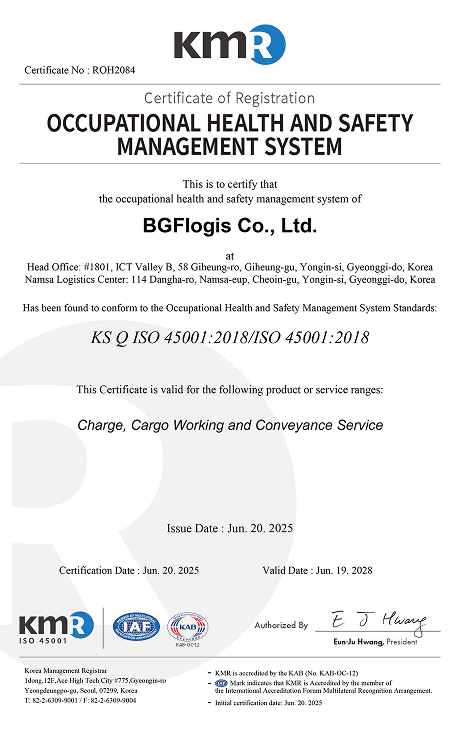

home > 회사소개 >
경영방침
VISION
경영이념
BGF로지스의 안전보건체계를 소개합니다.Vision and Mission
Our Value, Vision and Mission앞으로 BGF로지스는 사업 영역 다각화를 통해 사업 경쟁력을 확보하고
최적의 물류네트워크망을 구축하여 대한민국 최고의 물류서비스를
제공하는 전문물류기업이 되도록 전 임직원이 최선을 다하겠습니다.
-
Vision
앞으로 BGF로지스는 사업 영역 다각화를 통해 사업 경쟁력을 확보하고 최적의 물류네트워크망을 구축하여 대한민국 최고의 물류서비스를 제공하는 전문물류기업이 되도록 전 임직원이 최선을 다하겠습니다. -
Mission
BGF로지스는 지역 중심의 물류 거점지로서의 역할을 수행하며 최적의 입지 선정으로 전국납품률 평균 99.9%를 달성하고 있을 뿐만 아니라, 백령도부터 울릉도에 이르기까지 전국 방방곡곡에 항상 최상의 상품과 서비스를 제공함으로써 언제 어디서나 만날 수 있는 Daily Life Platform 서비스를 실현해 나가고 있습니다.
인증서보기

- ISO 45001
안전보건경영시스템 - 사업장에서 발생할 수 있는 각종 위험을 ...
- 인증 범위
- 물류보관, 하역,운송 서비스
- 취득 일자
- 2025.06.20 KS Q ISQ 54646464 2018/ISO
- 기관
- KMR 한국경영
ESG 전략
BGF로지스는 모든 조직의 미래상이자 전략적 지향점의 기초입니다
-
- Solution
- Soultion Provider
- emoji_objects
- Supply
- Energy Mix
- inventory_2
- Service
- Value Vreation
- support_agent
- Safety
- 차별화된 안전역량
- health_and_safety
- sustainability
- With Spice
- recycling